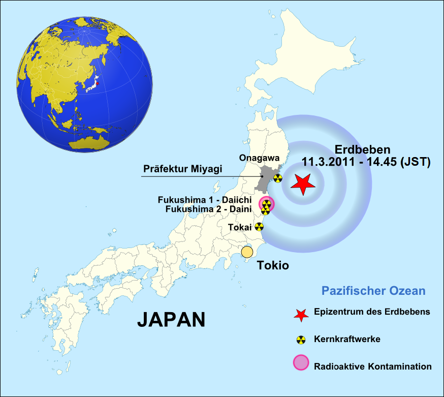
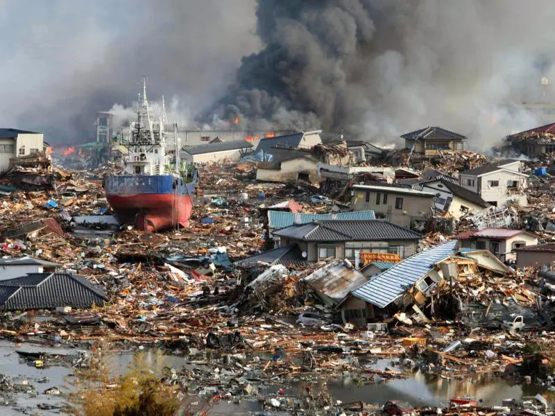
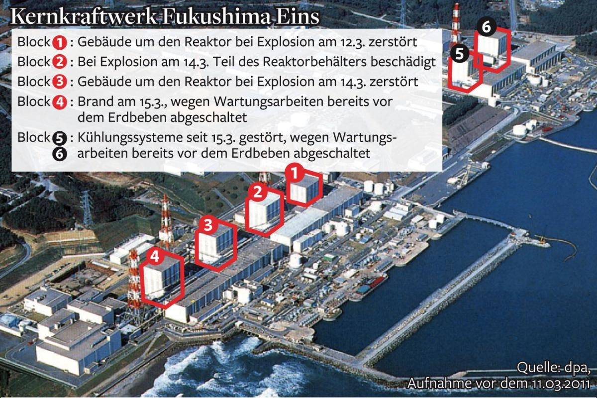

Informationstext: Was ist in Fukushima passiert?

Am 11. März 2011 ereignete sich vor der Nordostküste Japans ein sehr starkes Seebeben. Es hatte eine Magnitude von 9,0 und löste einen Tsunami aus. Das Beben selbst war schon extrem gefährlich, doch die größte Zerstörung entstand durch die hohen Flutwellen. Sie trafen die Küste kurze Zeit später und überfluteten viele Orte. Bild 1 hilft, die räumliche Lage zu verstehen: Das Epizentrum lag im Meer, aber die Folgen trafen vor allem die besiedelte Küste.

Der Tsunami beschädigte Straßen, Stromleitungen und viele technische Anlagen. Dadurch fielen in zahlreichen Bereichen die Versorgungssysteme aus. Bild 2 zeigt, warum Katastrophenschutz nicht nur ein Thema für ein einzelnes Kraftwerk ist: Wenn eine Region großflächig zerstört wird, sind Hilfe, Transport und Reparatur viel schwieriger. Für die Bevölkerung bedeutete das neben der direkten Gefahr auch eine lange Zeit der Unsicherheit.

Im Kernkraftwerk Fukushima Daiichi war die Lage besonders kritisch: Nach dem Beben schalteten sich Reaktoren zwar automatisch ab, aber sie mussten weiterhin gekühlt werden. Durch die Flut wurden jedoch Notstromversorgung und Teile der Kühlung beschädigt. Ohne ausreichende Kühlung stieg die Temperatur an, es bildete sich Wasserstoff, und in mehreren Gebäuden kam es zu Explosionen. Bild 3 macht sichtbar, dass die Anlage nicht nur einen kleinen Defekt hatte, sondern an mehreren Stellen schwer betroffen war.

Bild 4 ist für das Verständnis sehr wichtig: Es zeigt, dass man bei Fukushima nicht von einem einzigen Reaktor sprechen darf. Die Situation war komplex, weil mehrere Blöcke unterschiedlich betroffen waren. Für den Unterricht bedeutet das: Wer die Katastrophe erklären will, sollte immer den Ablauf in Schritten darstellen: Erdbeben -> Tsunami -> Ausfall von Strom/Kühlung -> Überhitzung -> Explosionen -> Evakuierung und Langzeitfolgen.
Warum ist Fukushima bis heute ein wichtiges NT-Thema?
Fukushima zeigt, wie eng Natur und Technik zusammenhängen. Ein Kernkraftwerk kann technisch gut geplant sein, aber bei extremen Naturereignissen müssen auch seltene Risiken berücksichtigt werden. Deshalb geht es in Natur und Technik nicht nur um "Wie funktioniert ein Reaktor?", sondern auch um Fragen wie: Welche Sicherheitsreserven gibt es? Was passiert bei Stromausfall? Wie schützt man Menschen und Umwelt im Notfall?
Für eure Plakate ist wichtig: Erklärt nicht nur die Explosionen, sondern den gesamten Zusammenhang. Gute Plakate zeigen Ursachen, Ablauf, Folgen und Lehren für die Zukunft. Nutzt dafür die vier Bilder gezielt als Belege: Karte für die Lage, Tsunami-Foto für die regionale Zerstörung, Luftbild für die Kraftwerksschäden und Blockgrafik für die technische Einordnung.
Aufgabenstellung: DINA3-Plakat zu Fukushima
- Stellt den Ablauf als Pfeilkette dar (z. B. mit →): Erdbeben -> Tsunami -> Ausfall von Strom/Kühlung -> Überhitzung -> Explosionen -> Evakuierung und Langzeitfolgen.
- Erklärt alle 4 Bilder jeweils in genau 1 vollständigen Satz.
- Nennt mindestens 3 konkrete Folgen für die Bevölkerung.
- Nennt mindestens 2 technische Lehren.
- Formuliert einen eigenen Merksatz zu: „Warum ist Fukushima ein Thema für Natur und Technik?“
Präsentation: Erstellt ein DINA3-Plakat, fotografiert es mit dem iPhone und präsentiert es über Apple TV. Jede Person in der Gruppe muss etwas vortragen.